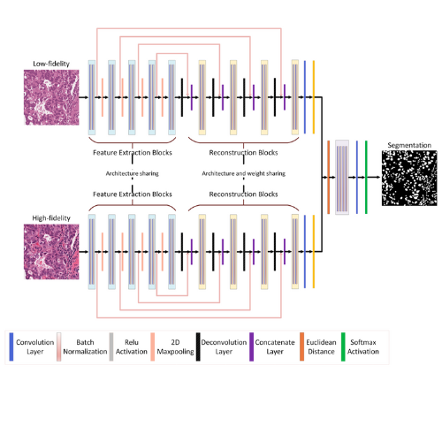
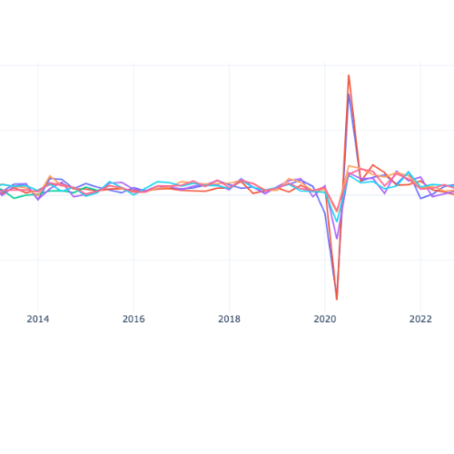
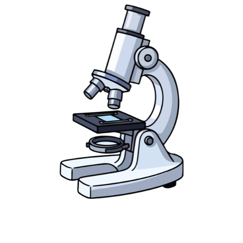
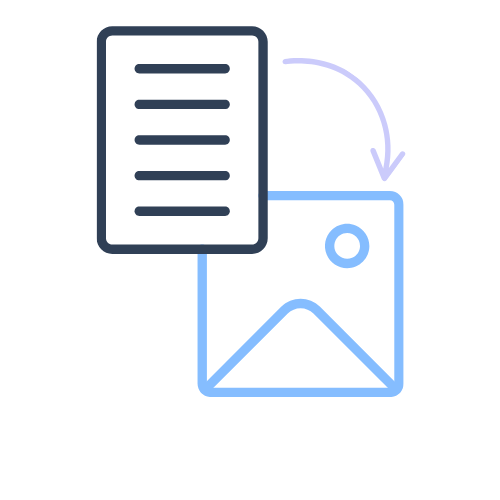
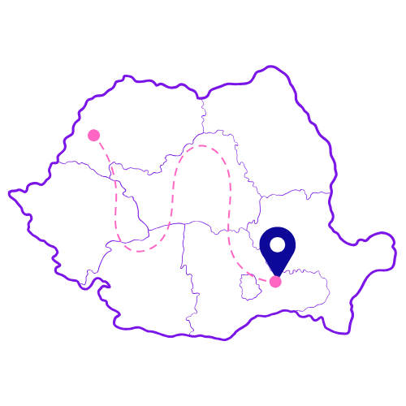
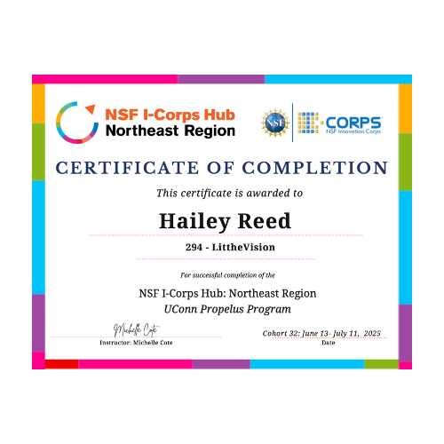
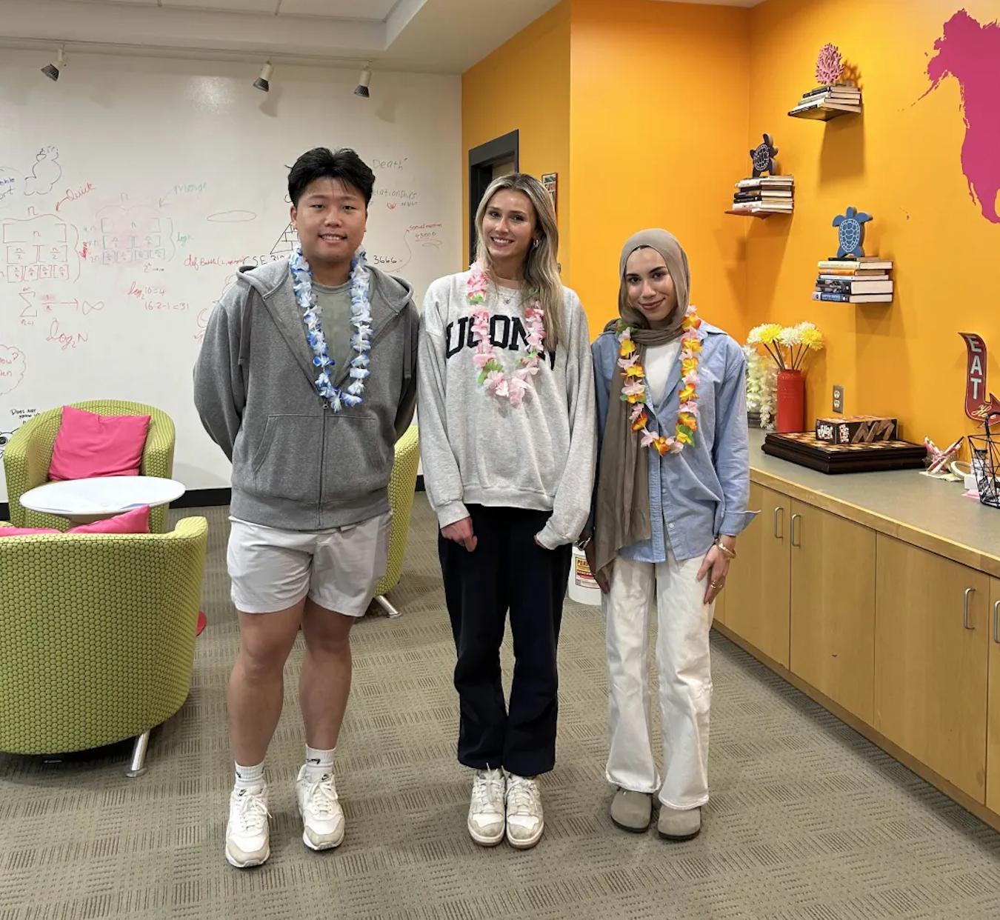
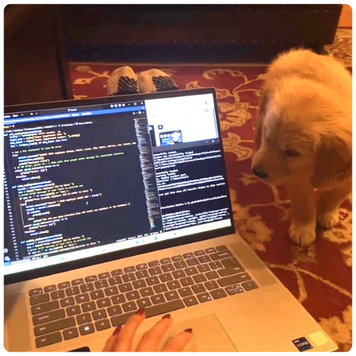

DeltaSegment is a research project that reframes medical image segmentation as a multi-fidelity change detection problem, designed for settings where labeled medical data are scarce and expensive to obtain. Instead of relying on large annotation budgets, the method pairs each high-fidelity medical image with a low-fidelity counterpart generated via color quantization. These paired inputs are processed by a Semi-Siamese neural network, after which the difference between their learned feature representations is passed to a downstream convolutional network to generate the final segmentation.
This architecture encourages the model to focus on structural differences and boundary information revealed through multi-fidelity comparisons, rather than relying solely on appearance cues in high-fidelity images. Built on a U-Net backbone, the design enables data-efficient learning without additional data collection or pretraining, making it well-suited for small-dataset medical imaging tasks.
DeltaSegment was evaluated on three widely used histopathology benchmarks (GlaS, MoNuSeg, and TNBC), where it achieves consistent improvements in Dice and IoU over strong CNN- and transformer-based baselines. The work includes extensive ablation studies analyzing feature fusion strategies, low-fidelity construction methods, and resolution trade-offs.
This work was conducted in the Scientific & Computational Machine Learning Laboratory (SciMaLL) at the University of Connecticut and has been submitted to the IEEE International Symposium on Biomedical Imaging (ISBI) 2026 (under review).
Preprint (submitted to IEEE ISBI 2026)
LitheVision is an early-stage computer vision startup developing robust, learning-based visual inspection systems for manufacturing quality control. Its core system is built on a Siamese-style deep learning architecture for change detection, enabling direct comparison between nominal (reference) and observed states while remaining resilient to environmental variation. By combining this architecture with multi-modal image analysis, LitheVision identifies subtle defects and anomalies that traditional rule-based inspection systems often miss, particularly under variable lighting, camera angles, and material conditions.
The project was developed through Accelerate UConn, the University of Connecticut’s National Science Foundation Innovation Corps (NSF I-Corps) program, where my partner and I conducted extensive customer discovery, validated market need, and refined the technical and commercial problem space through direct interviews with manufacturers and industry stakeholders.
LitheVision is currently advancing from technical validation to commercialization and is preparing a formal venture submission for the Rice Business Plan Competition, focusing on scalable deployment of AI-powered inspection tools that reduce reliance on manual inspection while improving reliability and consistency in high-stakes manufacturing environments.
LitheVision WebsiteThis project focuses on real-time GDP nowcasting using the FRED-MD panel of 126 monthly macroeconomic indicators, addressing the delay between economic activity and official GDP releases. Rather than relying solely on covariance-based statistical models, the work explores how neural network architectures can learn temporal dependencies, distinguish leading from lagging indicators, and adapt to realistic forecasting constraints.
I implemented and evaluated multiple neural forecasting models, including MLPs, CNNs, RNNs, LSTMs, and GRUs, using carefully constructed input sequences and real-time information sets that reflect data availability within each target quarter. Model performance is assessed under both stable and turbulent economic regimes and benchmarked against a naive persistence model and a Dynamic Factor Model (DFM). Results show that model effectiveness is highly regime-dependent, motivating adaptive or ensemble-based forecasting strategies rather than reliance on a single architecture.
In parallel, I designed and built an interactive Plotly Dash dashboard that integrates data preprocessing, sequence construction, and model evaluation into a unified visualization framework. The dashboard enables users to explore indicator behavior, examine leading versus lagging dynamics, and compare model predictions across economic conditions. This work was developed as part of a graduate-level Data Visualization and Communication course, and an accompanying paper documents the full pipeline, methodological choices, and insights from the visualization-driven analysis.
Data Visualization Paper

Implements the Balanced Random Forest (BRF) algorithm to detect fraudulent transactions in highly imbalanced datasets. Uses balanced bootstrapping and unpruned decision trees to improve sensitivity to minority class instances while maintaining strong overall performance.
View on GitHub →
A pipeline of pretrained modules for text-to-image generation using CLIP embeddings, U-Net denoising, and VAE decoding. Demonstrates the power of combining transformer-based language models with diffusion-based image generation.
View on GitHub →
Explores and visualizes classic search algorithms including BFS, DFS, UCS, Greedy Best-First Search, and A*. Interactive visualization shows traversal paths across a map of Romania to analyze efficiency and behavior.
View on GitHub →I love taking on front-end projects when I have the time, as it gives me a creative and artistic outlet alongside my technical work.
This portfolio was built using HTML, JavaScript, and CSS, with additional visuals designed in Canva. I created this site to showcase my projects and skills in a more interactive and accessible way than a traditional resume or GitHub page.
I also created the front end for the LitheVision website, which you can find in the project section above or visit directly at https://www.lithevision.org/.
View on GitHubThe NSF I-Corps Propelus Program is a prestigious initiative funded by the National Science Foundation to help academic researchers evaluate the commercial potential of their technologies. As a participant in Cohort 32 of the Northeast Hub, I received training in customer discovery, value proposition development, and go-to-market strategy alongside early-stage researchers and entrepreneurs.
Through this program, I conducted dozens of interviews with industry professionals and potential customers, refining our understanding of real-world pain points and validating market need for LitheVision, our AI-driven quality control system.
This experience provided me with a strong foundation in entrepreneurial thinking, technology translation, and early-stage venture development.
NSF I-Corps

Outside of my research and coursework, I serve as a Lifeguard at UConn's CSE BEACH (Belonging, Engagement, and Affinity Computer Hangout), where I support the School of Computing community by tutoring undergraduate students in core computer science topics and fostering a welcoming, inclusive environment.
In this role, I also help organize faculty-student engagement events, encourage peer collaboration, and contribute to building a strong sense of belonging among CS students from diverse backgrounds.

Beyond academics, I'm passionate about health and wellness. I love cooking, working out, and staying active. I also spend as much time as I can with my golden retriever puppy, Charlie (who occasionally tries to help me code 🐾).